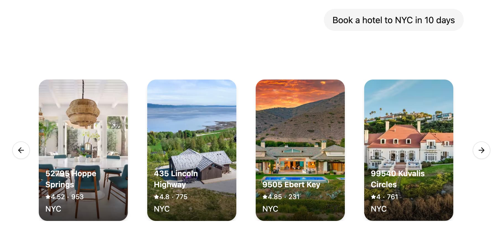

如何使用 LangGraph 实现生成式用户界面¶
生成式用户界面（Generative UI）允许代理超越文本并生成丰富的用户界面。这使得创建更具交互性和上下文感知能力的应用程序成为可能，其中 UI 根据对话流程和 AI 响应进行调整。

LangGraph 平台支持将您的 React 组件与您的图代码进行搭配。这使您能够专注于为您的图构建特定的 UI 组件，同时轻松地插入现有聊天界面（如 Agent Chat），并且仅在实际需要时才加载代码。
教程¶
1. 定义和配置 UI 组件¶
首先，创建您的第一个 UI 组件。对于每个组件，您需要提供一个唯一的标识符，该标识符将用于在您的图代码中引用该组件。
const WeatherComponent = (props: { city: string }) => {
return <div>Weather for {props.city}</div>;
};
export default {
weather: WeatherComponent,
};
接下来，在您的 langgraph.json 配置中定义您的 UI 组件
{
"node_version": "20",
"graphs": {
"agent": "./src/agent/index.ts:graph"
},
"ui": {
"agent": "./src/agent/ui.tsx"
}
}
ui 部分指向将由图使用的 UI 组件。默认情况下，我们建议使用与图名称相同的键，但您可以根据需要拆分组件，详情请参阅自定义 UI 组件的命名空间。
LangGraph 平台将自动打包您的 UI 组件代码和样式，并将其作为外部资产提供，这些资产可以通过 LoadExternalComponent 组件加载。一些依赖项，如 react 和 react-dom 将自动从捆绑包中排除。
CSS 和 Tailwind 4.x 也开箱即用，因此您可以在 UI 组件中自由使用 Tailwind 类以及 shadcn/ui。
2. 在图中发送 UI 组件¶
import uuid
from typing import Annotated, Sequence, TypedDict
from langchain_core.messages import AIMessage, BaseMessage
from langchain_openai import ChatOpenAI
from langgraph.graph import StateGraph
from langgraph.graph.message import add_messages
from langgraph.graph.ui import AnyUIMessage, ui_message_reducer, push_ui_message
class AgentState(TypedDict): # noqa: D101
messages: Annotated[Sequence[BaseMessage], add_messages]
ui: Annotated[Sequence[AnyUIMessage], ui_message_reducer]
async def weather(state: AgentState):
class WeatherOutput(TypedDict):
city: str
weather: WeatherOutput = (
await ChatOpenAI(model="gpt-4o-mini")
.with_structured_output(WeatherOutput)
.with_config({"tags": ["nostream"]})
.ainvoke(state["messages"])
)
message = AIMessage(
id=str(uuid.uuid4()),
content=f"Here's the weather for {weather['city']}",
)
# Emit UI elements associated with the message
push_ui_message("weather", weather, message=message)
return {"messages": [message]}
workflow = StateGraph(AgentState)
workflow.add_node(weather)
workflow.add_edge("__start__", "weather")
graph = workflow.compile()
使用 typedUi 工具从您的代理节点发出 UI 元素
import {
typedUi,
uiMessageReducer,
} from "@langchain/langgraph-sdk/react-ui/server";
import { ChatOpenAI } from "@langchain/openai";
import { v4 as uuidv4 } from "uuid";
import { z } from "zod";
import type ComponentMap from "./ui.js";
import {
Annotation,
MessagesAnnotation,
StateGraph,
type LangGraphRunnableConfig,
} from "@langchain/langgraph";
const AgentState = Annotation.Root({
...MessagesAnnotation.spec,
ui: Annotation({ reducer: uiMessageReducer, default: () => [] }),
});
export const graph = new StateGraph(AgentState)
.addNode("weather", async (state, config) => {
// Provide the type of the component map to ensure
// type safety of `ui.push()` calls as well as
// pushing the messages to the `ui` and sending a custom event as well.
const ui = typedUi<typeof ComponentMap>(config);
const weather = await new ChatOpenAI({ model: "gpt-4o-mini" })
.withStructuredOutput(z.object({ city: z.string() }))
.withConfig({ tags: ["nostream"] })
.invoke(state.messages);
const response = {
id: uuidv4(),
type: "ai",
content: `Here's the weather for ${weather.city}`,
};
// Emit UI elements associated with the AI message
ui.push({ name: "weather", props: weather }, { message: response });
return { messages: [response] };
})
.addEdge("__start__", "weather")
.compile();
3. 在 React 应用程序中处理 UI 元素¶
在客户端，您可以使用 useStream() 和 LoadExternalComponent 来显示 UI 元素。
"use client";
import { useStream } from "@langchain/langgraph-sdk/react";
import { LoadExternalComponent } from "@langchain/langgraph-sdk/react-ui";
export default function Page() {
const { thread, values } = useStream({
apiUrl: "https://:2024",
assistantId: "agent",
});
return (
<div>
{thread.messages.map((message) => (
<div key={message.id}>
{message.content}
{values.ui
?.filter((ui) => ui.metadata?.message_id === message.id)
.map((ui) => (
<LoadExternalComponent key={ui.id} stream={thread} message={ui} />
))}
</div>
))}
</div>
);
}
在幕后，LoadExternalComponent 将从 LangGraph 平台获取 UI 组件的 JS 和 CSS，并在影子 DOM 中渲染它们，从而确保与应用程序其余部分的样式隔离。
操作指南¶
在客户端提供自定义组件¶
如果您的客户端应用程序中已经加载了组件，您可以提供一个此类组件的映射，以便直接渲染，而无需从 LangGraph 平台获取 UI 代码。
const clientComponents = {
weather: WeatherComponent,
};
<LoadExternalComponent
stream={thread}
message={ui}
components={clientComponents}
/>;
组件加载时显示加载 UI¶
您可以提供一个备用 UI，在组件加载时进行渲染。
自定义 UI 组件的命名空间。¶
默认情况下，LoadExternalComponent 将使用 useStream() hook 中的 assistantId 来获取 UI 组件的代码。您可以通过向 LoadExternalComponent 组件提供 namespace prop 来对其进行自定义。
从 UI 组件访问和交互线程状态¶
您可以使用 useStreamContext hook 在 UI 组件内部访问线程状态。
import { useStreamContext } from "@langchain/langgraph-sdk/react-ui";
const WeatherComponent = (props: { city: string }) => {
const { thread, submit } = useStreamContext();
return (
<>
<div>Weather for {props.city}</div>
<button
onClick={() => {
const newMessage = {
type: "human",
content: `What's the weather in ${props.city}?`,
};
submit({ messages: [newMessage] });
}}
>
Retry
</button>
</>
);
};
将额外上下文传递给客户端组件¶
您可以通过向 LoadExternalComponent 组件提供 meta prop 来将额外上下文传递给客户端组件。
然后，您可以使用 useStreamContext hook 在 UI 组件中访问 meta prop。
import { useStreamContext } from "@langchain/langgraph-sdk/react-ui";
const WeatherComponent = (props: { city: string }) => {
const { meta } = useStreamContext<
{ city: string },
{ MetaType: { userId?: string } }
>();
return (
<div>
Weather for {props.city} (user: {meta?.userId})
</div>
);
};
从服务器流式传输 UI 消息¶
您可以通过使用 useStream() hook 的 onCustomEvent 回调，在节点执行完成之前流式传输 UI 消息。这在 LLM 生成响应时更新 UI 组件时特别有用。
import { uiMessageReducer } from "@langchain/langgraph-sdk/react-ui";
const { thread, submit } = useStream({
apiUrl: "https://:2024",
assistantId: "agent",
onCustomEvent: (event, options) => {
options.mutate((prev) => {
const ui = uiMessageReducer(prev.ui ?? [], event);
return { ...prev, ui };
});
},
});
然后，您可以通过调用 ui.push() / push_ui_message() 并使用与您希望更新的 UI 消息相同的 ID 来推送对 UI 组件的更新。
from typing import Annotated, Sequence, TypedDict
from langchain_anthropic import ChatAnthropic
from langchain_core.messages import AIMessage, AIMessageChunk, BaseMessage
from langgraph.graph import StateGraph
from langgraph.graph.message import add_messages
from langgraph.graph.ui import AnyUIMessage, push_ui_message, ui_message_reducer
class AgentState(TypedDict): # noqa: D101
messages: Annotated[Sequence[BaseMessage], add_messages]
ui: Annotated[Sequence[AnyUIMessage], ui_message_reducer]
class CreateTextDocument(TypedDict):
"""Prepare a document heading for the user."""
title: str
async def writer_node(state: AgentState):
model = ChatAnthropic(model="claude-3-5-sonnet-latest")
message: AIMessage = await model.bind_tools(
tools=[CreateTextDocument],
tool_choice={"type": "tool", "name": "CreateTextDocument"},
).ainvoke(state["messages"])
tool_call = next(
(x["args"] for x in message.tool_calls if x["name"] == "CreateTextDocument"),
None,
)
if tool_call:
ui_message = push_ui_message("writer", tool_call, message=message)
ui_message_id = ui_message["id"]
# We're already streaming the LLM response to the client through UI messages
# so we don't need to stream it again to the `messages` stream mode.
content_stream = model.with_config({"tags": ["nostream"]}).astream(
f"Create a document with the title: {tool_call['title']}"
)
content: AIMessageChunk | None = None
async for chunk in content_stream:
content = content + chunk if content else chunk
push_ui_message(
"writer",
{"content": content.text()},
id=ui_message_id,
message=message,
# Use `merge=rue` to merge props with the existing UI message
merge=True,
)
return {"messages": [message]}
import {
Annotation,
MessagesAnnotation,
type LangGraphRunnableConfig,
} from "@langchain/langgraph";
import { z } from "zod";
import { ChatAnthropic } from "@langchain/anthropic";
import {
typedUi,
uiMessageReducer,
} from "@langchain/langgraph-sdk/react-ui/server";
import type { AIMessageChunk } from "@langchain/core/messages";
import type ComponentMap from "./ui";
const AgentState = Annotation.Root({
...MessagesAnnotation.spec,
ui: Annotation({ reducer: uiMessageReducer, default: () => [] }),
});
async function writerNode(
state: typeof AgentState.State,
config: LangGraphRunnableConfig
): Promise<typeof AgentState.Update> {
const ui = typedUi<typeof ComponentMap>(config);
const model = new ChatAnthropic({ model: "claude-3-5-sonnet-latest" });
const message = await model
.bindTools(
[
{
name: "create_text_document",
description: "Prepare a document heading for the user.",
schema: z.object({ title: z.string() }),
},
],
{ tool_choice: { type: "tool", name: "create_text_document" } }
)
.invoke(state.messages);
type ToolCall = { name: "create_text_document"; args: { title: string } };
const toolCall = message.tool_calls?.find(
(tool): tool is ToolCall => tool.name === "create_text_document"
);
if (toolCall) {
const { id, name } = ui.push(
{ name: "writer", props: { title: toolCall.args.title } },
{ message }
);
const contentStream = await model
// We're already streaming the LLM response to the client through UI messages
// so we don't need to stream it again to the `messages` stream mode.
.withConfig({ tags: ["nostream"] })
.stream(`Create a short poem with the topic: ${message.text}`);
let content: AIMessageChunk | undefined;
for await (const chunk of contentStream) {
content = content?.concat(chunk) ?? chunk;
ui.push(
{ id, name, props: { content: content?.text } },
// Use `merge: true` to merge props with the existing UI message
{ message, merge: true }
);
}
}
return { messages: [message] };
}
从状态中移除 UI 消息¶
类似于通过追加 RemoveMessage 可以从状态中移除消息的方式，您可以通过调用 remove_ui_message / ui.delete 并使用 UI 消息的 ID 来从状态中移除 UI 消息。